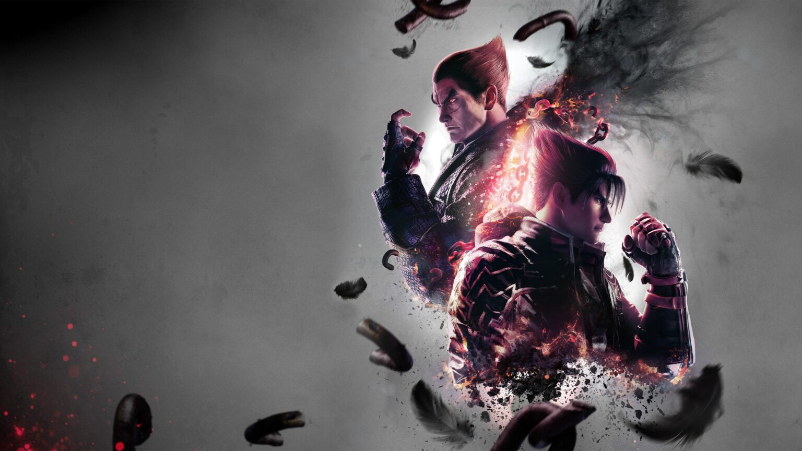

Nama : M.Mukhlis Adim
Nim: H233600446
Menambahkan Image ke dalam Dokumen HTML

Mengatur Border Pada Image
Alternating Text
Pada Image dibawah ini Terdapat Alternating Text.
Silahkan gerakkan mouse melewati image
Sinopsis Tekken:
Tekken The King of Iron Fist Tournament, merupakan sebuah tournament beladiri disuatu zaman yang tidak pernah disebutkan kapan. Zaman penuh dengan kehancuran tanpa pemerintahan. Satu-satunya otoritas berada di tangan perusahaan raksasa (the biggest company in the tekken world) "Mishima Zaibatstu". Yang dipimpin oleh seorang ahli beladiri (mishima's traditional kyokushin karate) dan pemilik kekuatan super genetika "Heihachi Mishima".
Untuk memberi kesempatan kepada manusia di seluruh dunia, agar mendapat tempat setara dirinya, dia menyelenggarakan sebuah tournament beladiri yang kita kenal sebagai Tekken.
Heihachi sekaligus ingin meraup keuntungan dari tournament tersebut melalui sponsor dan sebagainya. Pemenang tournament akan diberi sebagian otoritas untuk memimpin dunia.